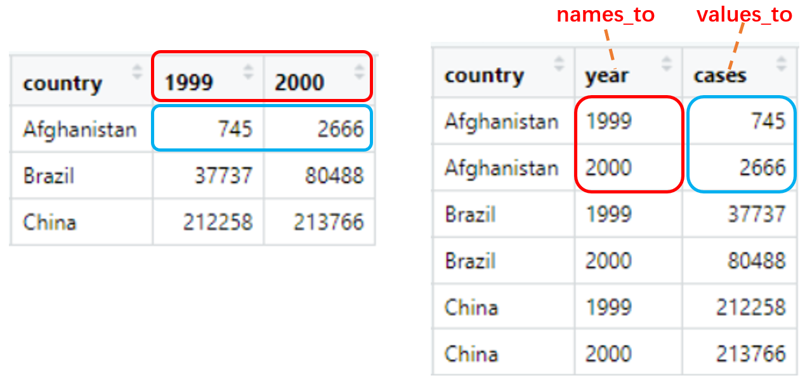

tidyr
library(tidyverse)
packageVersion("tidyr")
#> [1] '1.1.3'1 Separate and unite character vectors
1.1 Extract character column with regex groups: extract()
Given a regular expression with capturing groups, extract() turns each group into a new column. If the groups don’t match, or the input is NA, the output will be NA.
df <- tibble(folder = c('Screening', 'Cycle 1 Day 1', 'Cycle 2 Day 15'))
df
#> # A tibble: 3 x 1
#> folder
#> <chr>
#> 1 Screening
#> 2 Cycle 1 Day 1
#> 3 Cycle 2 Day 15
df %>% extract(
col = folder,
into = c('cycle', 'day'),
regex = 'Cycle (\\d+) Day (\\d+)'
)
#> # A tibble: 3 x 2
#> cycle day
#> <chr> <chr>
#> 1 <NA> <NA>
#> 2 1 1
#> 3 2 15
df %>% extract(
col = folder,
into = c('cycle', 'day'),
regex = 'Cycle (\\d+) Day (\\d+)',
remove = F
)
#> # A tibble: 3 x 2
#> cycle day
#> <chr> <chr>
#> 1 <NA> <NA>
#> 2 1 1
#> 3 2 151.2 Separate character column with separator: separate()
Given either a regular expression or a vector of character positions, separate() turns a single character column into multiple columns.
regex separator
df <- tibble(x = c('a,b:c', 'd_e_f')) df #> # A tibble: 2 x 1 #> x #> <chr> #> 1 a,b:c #> 2 d_e_f df %>% separate( col = x, into = c('x1', 'x2', 'x3'), sep = '[,:_]' ) #> # A tibble: 2 x 3 #> x1 x2 x3 #> <chr> <chr> <chr> #> 1 a b c #> 2 d e f df %>% separate( col = x, into = c('x1', 'x2', 'x3'), sep = '[,:_]', remove = F ) #> # A tibble: 2 x 3 #> x1 x2 x3 #> <chr> <chr> <chr> #> 1 a b c #> 2 d e fnumeric vector is interpreted as character positions to split at.
df <- tibble(fruit = c('apple', 'orange', 'pear', 'banana')) df #> # A tibble: 4 x 1 #> fruit #> <chr> #> 1 apple #> 2 orange #> 3 pear #> 4 banana df %>% separate( col = fruit, into = c('var1', 'var2', 'var3'), sep = c(2, 5) ) #> # A tibble: 4 x 3 #> var1 var2 var3 #> <chr> <chr> <chr> #> 1 ap ple "" #> 2 or ang "e" #> 3 pe ar "" #> 4 ba nan "a" df %>% separate( col = fruit, into = c('var1', 'var2'), sep = -2 ) #> # A tibble: 4 x 2 #> var1 var2 #> <chr> <chr> #> 1 app le #> 2 oran ge #> 3 pe ar #> 4 bana na
You can use extra and fill when there are too many pieces (or not enough pieces):
extra: If sep is a character vector, this controls what happens when there are too many pieces. There are three valid options:
“warn” (the default): emit a warning and drop extra values.
“drop”: drop any extra values without a warning.
“merge”: only splits at most
length(into)timesdf <- tibble(fruits = c('apples, oranges, pears, bananas', 'pineapples, mangos, guavas')) df #> # A tibble: 2 x 1 #> fruits #> <chr> #> 1 apples, oranges, pears, bananas #> 2 pineapples, mangos, guavas df %>% separate( col = fruits, into = c('fruit1', 'fruit2'), sep = ', ' ) #> Warning: Expected 2 pieces. Additional pieces discarded in 2 rows [1, 2]. #> # A tibble: 2 x 2 #> fruit1 fruit2 #> <chr> <chr> #> 1 apples oranges #> 2 pineapples mangos df %>% separate( col = fruits, into = c('fruit1', 'fruit2'), sep = ', ', extra = 'drop' ) #> # A tibble: 2 x 2 #> fruit1 fruit2 #> <chr> <chr> #> 1 apples oranges #> 2 pineapples mangos df %>% separate( col = fruits, into = c('fruit1', 'fruit2'), sep = ', ', extra = 'merge' ) #> # A tibble: 2 x 2 #> fruit1 fruit2 #> <chr> <chr> #> 1 apples oranges, pears, bananas #> 2 pineapples mangos, guavas
fill: If sep is a character vector, this controls what happens when there are not enough pieces. There are three valid options:
“warn” (the default): emit a warning and fill from the right
“right”: fill with missing values on the right
“left”: fill with missing values on the left
df %>% separate( col = fruits, into = c('fruit1', 'fruit2', 'fruit3', 'fruit4', 'fruit5'), sep = ', ' ) #> Warning: Expected 5 pieces. Missing pieces filled with `NA` in 2 rows [1, 2]. #> # A tibble: 2 x 5 #> fruit1 fruit2 fruit3 fruit4 fruit5 #> <chr> <chr> <chr> <chr> <chr> #> 1 apples oranges pears bananas <NA> #> 2 pineapples mangos guavas <NA> <NA> df %>% separate( col = fruits, into = c('fruit1', 'fruit2', 'fruit3', 'fruit4', 'fruit5'), sep = ', ', fill = 'right' ) #> # A tibble: 2 x 5 #> fruit1 fruit2 fruit3 fruit4 fruit5 #> <chr> <chr> <chr> <chr> <chr> #> 1 apples oranges pears bananas <NA> #> 2 pineapples mangos guavas <NA> <NA> df %>% separate( col = fruits, into = c('fruit1', 'fruit2', 'fruit3', 'fruit4', 'fruit5'), sep = ', ', fill = 'left' ) #> # A tibble: 2 x 5 #> fruit1 fruit2 fruit3 fruit4 fruit5 #> <chr> <chr> <chr> <chr> <chr> #> 1 <NA> apples oranges pears bananas #> 2 <NA> <NA> pineapples mangos guavas
1.3 Separate character column into multiple rows: separate_rows()
df <- tibble(
id = 1:2,
fruits = c(
"apples and oranges and pears and bananas",
"pineapples and mangos and guavas"
)
)
df
#> # A tibble: 2 x 2
#> id fruits
#> <int> <chr>
#> 1 1 apples and oranges and pears and bananas
#> 2 2 pineapples and mangos and guavas
df %>% separate_rows(fruits, sep = ' and ')
#> # A tibble: 7 x 2
#> id fruits
#> <int> <chr>
#> 1 1 apples
#> 2 1 oranges
#> 3 1 pears
#> 4 1 bananas
#> 5 2 pineapples
#> 6 2 mangos
#> 7 2 guavas1.4 Unite multiple columns into one: unite()
df <- tibble(x = c('a', 'b'), y = c('c', 'd'), z = c('e', 'f'))
df
#> # A tibble: 2 x 3
#> x y z
#> <chr> <chr> <chr>
#> 1 a c e
#> 2 b d f
df %>% unite(xy, c(x, y), sep = '_')
#> # A tibble: 2 x 2
#> xy z
#> <chr> <chr>
#> 1 a_c e
#> 2 b_d f
df %>% unite(xyz, x:z, sep = '.')
#> # A tibble: 2 x 1
#> xyz
#> <chr>
#> 1 a.c.e
#> 2 b.d.f
df %>% unite(xyz, x:z, sep = '.', remove = F)
#> # A tibble: 2 x 1
#> xyz
#> <chr>
#> 1 a.c.e
#> 2 b.d.fYou can use na.rm to remove missing values:
df <- tibble(x = c('a', 'b', 'c'), y = c('d', 'e', NA))
df
#> # A tibble: 3 x 2
#> x y
#> <chr> <chr>
#> 1 a d
#> 2 b e
#> 3 c <NA>
df %>% unite(xy, c(x, y), sep = '_')
#> # A tibble: 3 x 1
#> xy
#> <chr>
#> 1 a_d
#> 2 b_e
#> 3 c_NA
df %>% unite(xy, c(x, y), sep = '_', na.rm = T)
#> # A tibble: 3 x 1
#> xy
#> <chr>
#> 1 a_d
#> 2 b_e
#> 3 c2 Handle missing values
2.1 Drop rows containing missing values: drop_na()
df <- tibble(x = c(1, 2, NA), y = c("a", NA, "b"))
df
#> # A tibble: 3 x 2
#> x y
#> <dbl> <chr>
#> 1 1 a
#> 2 2 <NA>
#> 3 NA b
df %>% drop_na()
#> # A tibble: 1 x 2
#> x y
#> <dbl> <chr>
#> 1 1 a
df %>% drop_na(x)
#> # A tibble: 2 x 2
#> x y
#> <dbl> <chr>
#> 1 1 a
#> 2 2 <NA>2.2 Replace NAs with specified values: replace_na()
Replace NAs for vector
x <- c('a', 'b', NA) replace_na(x, 'missing') #> [1] "a" "b" "missing"Replace NAs for dataframe
df <- tibble(x = c(1, 2, NA), y = c("a", NA, "b")) df #> # A tibble: 3 x 2 #> x y #> <dbl> <chr> #> 1 1 a #> 2 2 <NA> #> 3 NA b df %>% replace_na(list(x = 0, y = "unknown")) #> # A tibble: 3 x 2 #> x y #> <dbl> <chr> #> 1 1 a #> 2 2 unknown #> 3 0 b
2.3 Fill in missing values with previous or next value: fill()
You can fill missing values in selected columns using the next or previous entry. The direction can be chose as “down” (the default), “up”, “downup” (i.e. first down and then up) or “updown” (first up and then down).
df <- tribble(
~quarter, ~year, ~sales,
"Q1", NA, 66013,
"Q2", NA, 69182,
"Q3", 2000, 53175,
"Q4", NA, 21001,
"Q1", 2001, 46036,
"Q2", NA, 58842,
"Q3", NA, 44568,
"Q4", NA, 50197,
)
df %>% fill(year)
#> # A tibble: 8 x 3
#> quarter year sales
#> <chr> <dbl> <dbl>
#> 1 Q1 NA 66013
#> 2 Q2 NA 69182
#> 3 Q3 2000 53175
#> 4 Q4 2000 21001
#> 5 Q1 2001 46036
#> 6 Q2 2001 58842
#> 7 Q3 2001 44568
#> 8 Q4 2001 50197
df %>% fill(year, .direction = 'up')
#> # A tibble: 8 x 3
#> quarter year sales
#> <chr> <dbl> <dbl>
#> 1 Q1 2000 66013
#> 2 Q2 2000 69182
#> 3 Q3 2000 53175
#> 4 Q4 2001 21001
#> 5 Q1 2001 46036
#> 6 Q2 NA 58842
#> 7 Q3 NA 44568
#> 8 Q4 NA 50197
df %>% fill(year, .direction = 'downup')
#> # A tibble: 8 x 3
#> quarter year sales
#> <chr> <dbl> <dbl>
#> 1 Q1 2000 66013
#> 2 Q2 2000 69182
#> 3 Q3 2000 53175
#> 4 Q4 2000 21001
#> 5 Q1 2001 46036
#> 6 Q2 2001 58842
#> 7 Q3 2001 44568
#> 8 Q4 2001 50197You can use fill() to “retain” value from previous observations. For example, you can get the dosage from latest cycle (dosage who is not 0 or NA):
df <- tibble(cycle = 1:7, dose = c(1, 0, NA, 2, 3, NA, 4))
df
#> # A tibble: 7 x 2
#> cycle dose
#> <int> <dbl>
#> 1 1 1
#> 2 2 0
#> 3 3 NA
#> 4 4 2
#> 5 5 3
#> 6 6 NA
#> 7 7 4
df %>%
mutate(
last_dose = if_else(dose %in% c(0, NA), NA_real_, dose),
last_dose = lag(last_dose)
) %>%
fill(last_dose)
#> # A tibble: 7 x 3
#> cycle dose last_dose
#> <int> <dbl> <dbl>
#> 1 1 1 NA
#> 2 2 0 1
#> 3 3 NA 1
#> 4 4 2 1
#> 5 5 3 2
#> 6 6 NA 3
#> 7 7 4 33 Reshape data
3.1 Pivot data from wide to long: pivot_longer()
pivot_longer() “Lengthen” data by collapsing several columns into two. You can select columns by cols with <tidy-select>, column names move to a new names_to column and values to a new values_to column.
pivot_longer(
data,
cols,
names_to = "name",
names_prefix = NULL,
names_sep = NULL,
names_pattern = NULL,
values_to = "value",
values_drop_na = FALSE
)Simplest case
table4a
#> # A tibble: 3 x 3
#> country `1999` `2000`
#> * <chr> <int> <int>
#> 1 Afghanistan 745 2666
#> 2 Brazil 37737 80488
#> 3 China 212258 213766
table4a %>% pivot_longer(c(`1999`, `2000`), names_to = 'year', values_to = 'cases')
#> # A tibble: 6 x 3
#> country year cases
#> <chr> <chr> <int>
#> 1 Afghanistan 1999 745
#> 2 Afghanistan 2000 2666
#> 3 Brazil 1999 37737
#> 4 Brazil 2000 80488
#> 5 China 1999 212258
#> 6 China 2000 213766
Drop rows that correspond to missing values
You can drop rows that contain only NA in the values_to column:
df <- tribble(
~id, ~choice1, ~choice2, ~choice3,
1, "A", "B", "C",
2, "C", "B", NA,
3, "D", NA, NA,
4, "B", "D", NA
)
df %>% pivot_longer(!id)
#> # A tibble: 12 x 3
#> id name value
#> <dbl> <chr> <chr>
#> 1 1 choice1 A
#> 2 1 choice2 B
#> 3 1 choice3 C
#> 4 2 choice1 C
#> 5 2 choice2 B
#> 6 2 choice3 <NA>
#> 7 3 choice1 D
#> 8 3 choice2 <NA>
#> 9 3 choice3 <NA>
#> 10 4 choice1 B
#> # … with 2 more rows
df %>% pivot_longer(!id, values_drop_na = T)
#> # A tibble: 8 x 3
#> id name value
#> <dbl> <chr> <chr>
#> 1 1 choice1 A
#> 2 1 choice2 B
#> 3 1 choice3 C
#> 4 2 choice1 C
#> 5 2 choice2 B
#> 6 3 choice1 D
#> 7 4 choice1 B
#> 8 4 choice2 Dstrip common prefix
You can use names_prefix to strip common prefix:
billboard
#> # A tibble: 317 x 79
#> artist track date.entered wk1 wk2 wk3 wk4 wk5 wk6 wk7 wk8
#> <chr> <chr> <date> <dbl> <dbl> <dbl> <dbl> <dbl> <dbl> <dbl> <dbl>
#> 1 2 Pac Baby D… 2000-02-26 87 82 72 77 87 94 99 NA
#> 2 2Ge+her The Ha… 2000-09-02 91 87 92 NA NA NA NA NA
#> 3 3 Doors… Krypto… 2000-04-08 81 70 68 67 66 57 54 53
#> 4 3 Doors… Loser 2000-10-21 76 76 72 69 67 65 55 59
#> 5 504 Boyz Wobble… 2000-04-15 57 34 25 17 17 31 36 49
#> 6 98^0 Give M… 2000-08-19 51 39 34 26 26 19 2 2
#> 7 A*Teens Dancin… 2000-07-08 97 97 96 95 100 NA NA NA
#> 8 Aaliyah I Don'… 2000-01-29 84 62 51 41 38 35 35 38
#> 9 Aaliyah Try Ag… 2000-03-18 59 53 38 28 21 18 16 14
#> 10 Adams, … Open M… 2000-08-26 76 76 74 69 68 67 61 58
#> # … with 307 more rows, and 68 more variables: wk9 <dbl>, wk10 <dbl>,
#> # wk11 <dbl>, wk12 <dbl>, wk13 <dbl>, wk14 <dbl>, wk15 <dbl>, wk16 <dbl>,
#> # wk17 <dbl>, wk18 <dbl>, wk19 <dbl>, wk20 <dbl>, wk21 <dbl>, wk22 <dbl>,
#> # wk23 <dbl>, wk24 <dbl>, wk25 <dbl>, wk26 <dbl>, wk27 <dbl>, wk28 <dbl>,
#> # wk29 <dbl>, wk30 <dbl>, wk31 <dbl>, wk32 <dbl>, wk33 <dbl>, wk34 <dbl>,
#> # wk35 <dbl>, wk36 <dbl>, wk37 <dbl>, wk38 <dbl>, wk39 <dbl>, wk40 <dbl>,
#> # wk41 <dbl>, wk42 <dbl>, wk43 <dbl>, wk44 <dbl>, wk45 <dbl>, wk46 <dbl>,
#> # wk47 <dbl>, wk48 <dbl>, wk49 <dbl>, wk50 <dbl>, wk51 <dbl>, wk52 <dbl>,
#> # wk53 <dbl>, wk54 <dbl>, wk55 <dbl>, wk56 <dbl>, wk57 <dbl>, wk58 <dbl>,
#> # wk59 <dbl>, wk60 <dbl>, wk61 <dbl>, wk62 <dbl>, wk63 <dbl>, wk64 <dbl>,
#> # wk65 <dbl>, wk66 <lgl>, wk67 <lgl>, wk68 <lgl>, wk69 <lgl>, wk70 <lgl>,
#> # wk71 <lgl>, wk72 <lgl>, wk73 <lgl>, wk74 <lgl>, wk75 <lgl>, wk76 <lgl>
billboard %>%
pivot_longer(
cols = starts_with("wk"),
names_to = "week",
names_prefix = 'wk',
values_to = "rank",
values_drop_na = T
)
#> # A tibble: 5,307 x 5
#> artist track date.entered week rank
#> <chr> <chr> <date> <chr> <dbl>
#> 1 2 Pac Baby Don't Cry (Keep... 2000-02-26 1 87
#> 2 2 Pac Baby Don't Cry (Keep... 2000-02-26 2 82
#> 3 2 Pac Baby Don't Cry (Keep... 2000-02-26 3 72
#> 4 2 Pac Baby Don't Cry (Keep... 2000-02-26 4 77
#> 5 2 Pac Baby Don't Cry (Keep... 2000-02-26 5 87
#> 6 2 Pac Baby Don't Cry (Keep... 2000-02-26 6 94
#> 7 2 Pac Baby Don't Cry (Keep... 2000-02-26 7 99
#> 8 2Ge+her The Hardest Part Of ... 2000-09-02 1 91
#> 9 2Ge+her The Hardest Part Of ... 2000-09-02 2 87
#> 10 2Ge+her The Hardest Part Of ... 2000-09-02 3 92
#> # … with 5,297 more rowsMultiple variables stored in column names
You can extract multiple names_to columns via names_sep or names_pattern, for example, “sex” and “level” stored as column names and separated by _:
df <- tribble(
~subject, ~f_1, ~f_2, ~m_1, ~m_2,
1, 11, 21, 31, 41,
2, 12, 22, 32, 42,
3, 13, 23, 33, 43,
)
df %>%
pivot_longer(
cols = !subject,
names_to = c('sex', 'level'),
names_sep = '_'
)
#> # A tibble: 12 x 4
#> subject sex level value
#> <dbl> <chr> <chr> <dbl>
#> 1 1 f 1 11
#> 2 1 f 2 21
#> 3 1 m 1 31
#> 4 1 m 2 41
#> 5 2 f 1 12
#> 6 2 f 2 22
#> 7 2 m 1 32
#> 8 2 m 2 42
#> 9 3 f 1 13
#> 10 3 f 2 23
#> # … with 2 more rows
df %>%
pivot_longer(
cols = !subject,
names_to = c('sex', 'level'),
names_pattern = '(.)_(.)'
)
#> # A tibble: 12 x 4
#> subject sex level value
#> <dbl> <chr> <chr> <dbl>
#> 1 1 f 1 11
#> 2 1 f 2 21
#> 3 1 m 1 31
#> 4 1 m 2 41
#> 5 2 f 1 12
#> 6 2 f 2 22
#> 7 2 m 1 32
#> 8 2 m 2 42
#> 9 3 f 1 13
#> 10 3 f 2 23
#> # … with 2 more rowsnames_sep and names_pattern work same as separate() and extract(), you can also use separate() or extract() after pivot_longer():
df %>%
pivot_longer(cols = !subject) %>%
separate(col = 'name', into = c('sex', 'level'), sep = '_')
#> # A tibble: 12 x 4
#> subject sex level value
#> <dbl> <chr> <chr> <dbl>
#> 1 1 f 1 11
#> 2 1 f 2 21
#> 3 1 m 1 31
#> 4 1 m 2 41
#> 5 2 f 1 12
#> 6 2 f 2 22
#> 7 2 m 1 32
#> 8 2 m 2 42
#> 9 3 f 1 13
#> 10 3 f 2 23
#> # … with 2 more rows
df %>%
pivot_longer(cols = !subject) %>%
extract(col = 'name', into = c('sex', 'level'), regex = '(.)_(.)')
#> # A tibble: 12 x 4
#> subject sex level value
#> <dbl> <chr> <chr> <dbl>
#> 1 1 f 1 11
#> 2 1 f 2 21
#> 3 1 m 1 31
#> 4 1 m 2 41
#> 5 2 f 1 12
#> 6 2 f 2 22
#> 7 2 m 1 32
#> 8 2 m 2 42
#> 9 3 f 1 13
#> 10 3 f 2 23
#> # … with 2 more rowsMultiple group of columns to pivot
family <- tribble(
~family, ~dob_child1, ~dob_child2, ~gender_child1, ~gender_child2,
1L, "1998-11-26", "2000-01-29", 1L, 2L,
2L, "1996-06-22", NA, 2L, NA,
3L, "2002-07-11", "2004-04-05", 2L, 2L,
4L, "2004-10-10", "2009-08-27", 1L, 1L,
5L, "2000-12-05", "2005-02-28", 2L, 1L,
)We have two pieces of information (or values) for each child: their gender and their dob, these need to go into separate columns in the result. Here we use names_sep to split up each variable name, use a special name .value in names_to to extract the name of the “value” columns, and ignore the argument values_to.
family %>%
pivot_longer(
!family,
names_to = c(".value", "child"),
names_sep = "_",
values_drop_na = TRUE
)
#> # A tibble: 9 x 4
#> family child dob gender
#> <int> <chr> <chr> <int>
#> 1 1 child1 1998-11-26 1
#> 2 1 child2 2000-01-29 2
#> 3 2 child1 1996-06-22 2
#> 4 3 child1 2002-07-11 2
#> 5 3 child2 2004-04-05 2
#> 6 4 child1 2004-10-10 1
#> 7 4 child2 2009-08-27 1
#> 8 5 child1 2000-12-05 2
#> 9 5 child2 2005-02-28 13.2 Pivot data from long to wide: pivot_wider()
pivot_wider() “Widen” data by expanding two columns into several. names_from provides the new column names and values_from provides the values.
pivot_wider(
data,
id_cols = NULL,
names_from = name,
names_prefix = "",
names_sep = "_",
names_glue = NULL,
values_from = value,
values_fill = NULL
)3.2.1 Simplest case
table2
#> # A tibble: 12 x 4
#> country year type count
#> <chr> <int> <chr> <int>
#> 1 Afghanistan 1999 cases 745
#> 2 Afghanistan 1999 population 19987071
#> 3 Afghanistan 2000 cases 2666
#> 4 Afghanistan 2000 population 20595360
#> 5 Brazil 1999 cases 37737
#> 6 Brazil 1999 population 172006362
#> 7 Brazil 2000 cases 80488
#> 8 Brazil 2000 population 174504898
#> 9 China 1999 cases 212258
#> 10 China 1999 population 1272915272
#> # … with 2 more rows
table2 %>% pivot_wider(names_from = type, values_from = count)
#> # A tibble: 6 x 4
#> country year cases population
#> <chr> <int> <int> <int>
#> 1 Afghanistan 1999 745 19987071
#> 2 Afghanistan 2000 2666 20595360
#> 3 Brazil 1999 37737 172006362
#> 4 Brazil 2000 80488 174504898
#> 5 China 1999 212258 1272915272
#> 6 China 2000 213766 1280428583
3.2.2 Fill in missing values
You can fill in missing values with values_fill:
fish_encounters
#> # A tibble: 114 x 3
#> fish station seen
#> <fct> <fct> <int>
#> 1 4842 Release 1
#> 2 4842 I80_1 1
#> 3 4842 Lisbon 1
#> 4 4842 Rstr 1
#> 5 4842 Base_TD 1
#> 6 4842 BCE 1
#> 7 4842 BCW 1
#> 8 4842 BCE2 1
#> 9 4842 BCW2 1
#> 10 4842 MAE 1
#> # … with 104 more rows
fish_encounters %>% pivot_wider(names_from = station, values_from = seen)
#> # A tibble: 19 x 12
#> fish Release I80_1 Lisbon Rstr Base_TD BCE BCW BCE2 BCW2 MAE MAW
#> <fct> <int> <int> <int> <int> <int> <int> <int> <int> <int> <int> <int>
#> 1 4842 1 1 1 1 1 1 1 1 1 1 1
#> 2 4843 1 1 1 1 1 1 1 1 1 1 1
#> 3 4844 1 1 1 1 1 1 1 1 1 1 1
#> 4 4845 1 1 1 1 1 NA NA NA NA NA NA
#> 5 4847 1 1 1 NA NA NA NA NA NA NA NA
#> 6 4848 1 1 1 1 NA NA NA NA NA NA NA
#> 7 4849 1 1 NA NA NA NA NA NA NA NA NA
#> 8 4850 1 1 NA 1 1 1 1 NA NA NA NA
#> 9 4851 1 1 NA NA NA NA NA NA NA NA NA
#> 10 4854 1 1 NA NA NA NA NA NA NA NA NA
#> # … with 9 more rows
fish_encounters %>% pivot_wider(names_from = station, values_from = seen, values_fill = 0)
#> # A tibble: 19 x 12
#> fish Release I80_1 Lisbon Rstr Base_TD BCE BCW BCE2 BCW2 MAE MAW
#> <fct> <int> <int> <int> <int> <int> <int> <int> <int> <int> <int> <int>
#> 1 4842 1 1 1 1 1 1 1 1 1 1 1
#> 2 4843 1 1 1 1 1 1 1 1 1 1 1
#> 3 4844 1 1 1 1 1 1 1 1 1 1 1
#> 4 4845 1 1 1 1 1 0 0 0 0 0 0
#> 5 4847 1 1 1 0 0 0 0 0 0 0 0
#> 6 4848 1 1 1 1 0 0 0 0 0 0 0
#> 7 4849 1 1 0 0 0 0 0 0 0 0 0
#> 8 4850 1 1 0 1 1 1 1 0 0 0 0
#> 9 4851 1 1 0 0 0 0 0 0 0 0 0
#> 10 4854 1 1 0 0 0 0 0 0 0 0 0
#> # … with 9 more rows3.2.3 Generate column name from multiple variables
When names_from or values_from contains multiple variables, names_sep or names_glue can be used to generate the new column names.
use
names_sepornames_glueto combine multiplenames_from:production <- expand_grid( product = c("A", "B"), country = c("AI", "EI"), year = 2000:2014 ) %>% filter((product == "A" & country == "AI") | product == "B") %>% mutate(production = rnorm(n())) production #> # A tibble: 45 x 4 #> product country year production #> <chr> <chr> <int> <dbl> #> 1 A AI 2000 0.896 #> 2 A AI 2001 0.732 #> 3 A AI 2002 -0.308 #> 4 A AI 2003 -0.951 #> 5 A AI 2004 -0.356 #> 6 A AI 2005 1.32 #> 7 A AI 2006 -0.125 #> 8 A AI 2007 0.515 #> 9 A AI 2008 0.667 #> 10 A AI 2009 -0.464 #> # … with 35 more rows production %>% pivot_wider( names_from = c(product, country), values_from = production, names_sep = "." ) #> # A tibble: 15 x 4 #> year A.AI B.AI B.EI #> <int> <dbl> <dbl> <dbl> #> 1 2000 0.896 -0.0120 -0.366 #> 2 2001 0.732 -0.993 -0.639 #> 3 2002 -0.308 -0.306 0.952 #> 4 2003 -0.951 0.159 -0.484 #> 5 2004 -0.356 -0.000914 -0.680 #> 6 2005 1.32 -0.672 0.200 #> 7 2006 -0.125 2.65 -0.0429 #> 8 2007 0.515 2.00 0.509 #> 9 2008 0.667 1.41 -1.16 #> 10 2009 -0.464 0.604 0.846 #> # … with 5 more rows production %>% pivot_wider( names_from = c(product, country), values_from = production, names_glue = "{country}_{product}" ) #> # A tibble: 15 x 4 #> year AI_A AI_B EI_B #> <int> <dbl> <dbl> <dbl> #> 1 2000 0.896 -0.0120 -0.366 #> 2 2001 0.732 -0.993 -0.639 #> 3 2002 -0.308 -0.306 0.952 #> 4 2003 -0.951 0.159 -0.484 #> 5 2004 -0.356 -0.000914 -0.680 #> 6 2005 1.32 -0.672 0.200 #> 7 2006 -0.125 2.65 -0.0429 #> 8 2007 0.515 2.00 0.509 #> 9 2008 0.667 1.41 -1.16 #> 10 2009 -0.464 0.604 0.846 #> # … with 5 more rowsuse multiple
values_fromto pivot groups of columns:us_rent_income #> # A tibble: 104 x 5 #> GEOID NAME variable estimate moe #> <chr> <chr> <chr> <dbl> <dbl> #> 1 01 Alabama income 24476 136 #> 2 01 Alabama rent 747 3 #> 3 02 Alaska income 32940 508 #> 4 02 Alaska rent 1200 13 #> 5 04 Arizona income 27517 148 #> 6 04 Arizona rent 972 4 #> 7 05 Arkansas income 23789 165 #> 8 05 Arkansas rent 709 5 #> 9 06 California income 29454 109 #> 10 06 California rent 1358 3 #> # … with 94 more rows us_rent_income %>% pivot_wider( names_from = variable, names_glue = "{variable}_{.value}", values_from = c(estimate, moe) ) #> # A tibble: 52 x 6 #> GEOID NAME income_estimate rent_estimate income_moe rent_moe #> <chr> <chr> <dbl> <dbl> <dbl> <dbl> #> 1 01 Alabama 24476 747 136 3 #> 2 02 Alaska 32940 1200 508 13 #> 3 04 Arizona 27517 972 148 4 #> 4 05 Arkansas 23789 709 165 5 #> 5 06 California 29454 1358 109 3 #> 6 08 Colorado 32401 1125 109 5 #> 7 09 Connecticut 35326 1123 195 5 #> 8 10 Delaware 31560 1076 247 10 #> 9 11 District of Columbia 43198 1424 681 17 #> 10 12 Florida 25952 1077 70 3 #> # … with 42 more rows
3.3 longer then wider
You can combine pivot_longer() and pivot_wider() for more complex problems:
df <- tribble(
~ group, ~ level1, ~ level2,
'a', 3, 4,
'b', 50, 100,
'c', 200, 1000,
)
df %>% pivot_longer(starts_with('level'), names_to = 'level', values_to = 'value')
#> # A tibble: 6 x 3
#> group level value
#> <chr> <chr> <dbl>
#> 1 a level1 3
#> 2 a level2 4
#> 3 b level1 50
#> 4 b level2 100
#> 5 c level1 200
#> 6 c level2 1000
df %>%
pivot_longer(starts_with('level'), names_to = 'level', values_to = 'value') %>%
pivot_wider(names_from = 'group', values_from = 'value')
#> # A tibble: 2 x 4
#> level a b c
#> <chr> <dbl> <dbl> <dbl>
#> 1 level1 3 50 200
#> 2 level2 4 100 10003.4 Using pivotting specification
To gain more control over pivotting, you can create a “spec” data frame that describes exactly how data stored in the column names becomes variables (and vice versa).
You can refer to Pivoting | Manual specs
4 Generate “complete” data
4.1 Create tibble from all combinations of inputs: expand_grid()
expand_grid(x = 1:2, y = c('a', 'b', 'c'))
#> # A tibble: 6 x 2
#> x y
#> <int> <chr>
#> 1 1 a
#> 2 1 b
#> 3 1 c
#> 4 2 a
#> 5 2 b
#> 6 2 c
expand_grid(var1 = c(1, 2, 1), var2 = c('a', 'b'))
#> # A tibble: 6 x 2
#> var1 var2
#> <dbl> <chr>
#> 1 1 a
#> 2 1 b
#> 3 2 a
#> 4 2 b
#> 5 1 a
#> 6 1 b4.2 Expand data frame to include all possible combinations of values: expand()
expand() generates all combination of variables found in a dataset, and drop other columns:
fruits <- tibble(
type = c("apple", "orange", "apple", "orange", "orange", "orange"),
year = c(2010, 2010, 2012, 2010, 2010, 2012),
size = c("XS", "S", "M", "S", "S", "M")
)
fruits %>% expand(type, year)
#> # A tibble: 4 x 2
#> type year
#> <chr> <dbl>
#> 1 apple 2010
#> 2 apple 2012
#> 3 orange 2010
#> 4 orange 2012
fruits %>% expand(type, year, size)
#> # A tibble: 12 x 3
#> type year size
#> <chr> <dbl> <chr>
#> 1 apple 2010 M
#> 2 apple 2010 S
#> 3 apple 2010 XS
#> 4 apple 2012 M
#> 5 apple 2012 S
#> 6 apple 2012 XS
#> 7 orange 2010 M
#> 8 orange 2010 S
#> 9 orange 2010 XS
#> 10 orange 2012 M
#> # … with 2 more rowsIt’s same as using expand_grid() and unique() out of the dataset:
expand_grid(type = unique(fruits$type), year = unique(fruits$year))
#> # A tibble: 4 x 2
#> type year
#> <chr> <dbl>
#> 1 apple 2010
#> 2 apple 2012
#> 3 orange 2010
#> 4 orange 2012
expand_grid(type = unique(fruits$type), year = unique(fruits$year), size = unique(fruits$size))
#> # A tibble: 12 x 3
#> type year size
#> <chr> <dbl> <chr>
#> 1 apple 2010 XS
#> 2 apple 2010 S
#> 3 apple 2010 M
#> 4 apple 2012 XS
#> 5 apple 2012 S
#> 6 apple 2012 M
#> 7 orange 2010 XS
#> 8 orange 2010 S
#> 9 orange 2010 M
#> 10 orange 2012 XS
#> # … with 2 more rowsYou can use nesting() in expand() if you only want to choose combinations that already appear in the data:
fruits %>% expand(nesting(type, size))
#> # A tibble: 4 x 2
#> type size
#> <chr> <chr>
#> 1 apple M
#> 2 apple XS
#> 3 orange M
#> 4 orange S
fruits %>% expand(nesting(type, size), year)
#> # A tibble: 8 x 3
#> type size year
#> <chr> <chr> <dbl>
#> 1 apple M 2010
#> 2 apple M 2012
#> 3 apple XS 2010
#> 4 apple XS 2012
#> 5 orange M 2010
#> 6 orange M 2012
#> 7 orange S 2010
#> 8 orange S 20124.3 Complete data frame with missing combinations of data: complete()
In contrast to expand(), complete() keep other columns and leave them NA if combinations don’t appear in the dataset:
df <- tibble(
group = c(1:2, 1),
item_name = c("a", "b", "b"),
value1 = 1:3,
value2 = 4:6
)
df
#> # A tibble: 3 x 4
#> group item_name value1 value2
#> <dbl> <chr> <int> <int>
#> 1 1 a 1 4
#> 2 2 b 2 5
#> 3 1 b 3 6
df %>% expand(group, item_name)
#> # A tibble: 4 x 2
#> group item_name
#> <dbl> <chr>
#> 1 1 a
#> 2 1 b
#> 3 2 a
#> 4 2 b
df %>% complete(group, item_name)
#> # A tibble: 4 x 4
#> group item_name value1 value2
#> <dbl> <chr> <int> <int>
#> 1 1 a 1 4
#> 2 1 b 3 6
#> 3 2 a NA NA
#> 4 2 b 2 5You can also choose to fill in missing values:
df %>% complete(group, item_name, fill = list(value1 = 0))
#> # A tibble: 4 x 4
#> group item_name value1 value2
#> <dbl> <chr> <dbl> <int>
#> 1 1 a 1 4
#> 2 1 b 3 6
#> 3 2 a 0 NA
#> 4 2 b 2 54.4 Duplicate rows according to counts: uncount()
uncount() duplicating rows according to a weighting variable (or constants, expressions)
df <- tibble(x = c("a", "b"), n = c(1, 2))
df
#> # A tibble: 2 x 2
#> x n
#> <chr> <dbl>
#> 1 a 1
#> 2 b 2
uncount(df, n)
#> # A tibble: 3 x 1
#> x
#> <chr>
#> 1 a
#> 2 b
#> 3 b
uncount(df, n, .remove = F)
#> # A tibble: 3 x 1
#> x
#> <chr>
#> 1 a
#> 2 b
#> 3 b
uncount(df, 3)
#> # A tibble: 6 x 2
#> x n
#> <chr> <dbl>
#> 1 a 1
#> 2 a 1
#> 3 a 1
#> 4 b 2
#> 5 b 2
#> 6 b 2
uncount(df, n + 1)
#> # A tibble: 5 x 2
#> x n
#> <chr> <dbl>
#> 1 a 1
#> 2 a 1
#> 3 b 2
#> 4 b 2
#> 5 b 24.5 Create the full sequence of values in a vector: full_seq()
year <- c(2020, 2015, 2018, 2021)
full_seq(year, 1)
#> [1] 2015 2016 2017 2018 2019 2020 20215 Work with nested data
5.1 Create nested data
5.1.1 nest()
nest() create list-column of tibbles:
df <- tribble(
~g, ~x, ~y,
1, 1, 2,
2, 4, 6,
2, 5, 7,
3, 10, NA
)
df %>% nest(data = c(x, y))
#> # A tibble: 3 x 2
#> g data
#> <dbl> <list>
#> 1 1 <tibble[,2] [1 × 2]>
#> 2 2 <tibble[,2] [2 × 2]>
#> 3 3 <tibble[,2] [1 × 2]>
iris %>% nest(width = contains("Width"), length = contains("Length"))
#> # A tibble: 3 x 3
#> Species width length
#> <fct> <list> <list>
#> 1 setosa <tibble[,2] [50 × 2]> <tibble[,2] [50 × 2]>
#> 2 versicolor <tibble[,2] [50 × 2]> <tibble[,2] [50 × 2]>
#> 3 virginica <tibble[,2] [50 × 2]> <tibble[,2] [50 × 2]>Nesting a grouped data frame nests all variables apart from the group vars:
df %>% group_by(g) %>% nest()
#> # A tibble: 3 x 2
#> # Groups: g [3]
#> g data
#> <dbl> <list>
#> 1 1 <tibble[,2] [1 × 2]>
#> 2 2 <tibble[,2] [2 × 2]>
#> 3 3 <tibble[,2] [1 × 2]>5.1.2 Create tibble with list-columns
You can create simple nested data by hand:
df <- tibble(
g = c(1, 2, 3),
data = list(
tibble(x = 1, y = 2),
tibble(x = 4:5, y = 6:7),
tibble(x = 10)
)
)
df
#> # A tibble: 3 x 2
#> g data
#> <dbl> <list>
#> 1 1 <tibble[,2] [1 × 2]>
#> 2 2 <tibble[,2] [2 × 2]>
#> 3 3 <tibble[,1] [1 × 1]>
df <- tibble(
g = c(1, 2, 3),
data = list(1, 4:5, 10)
)
df
#> # A tibble: 3 x 2
#> g data
#> <dbl> <list>
#> 1 1 <dbl [1]>
#> 2 2 <int [2]>
#> 3 3 <dbl [1]>5.1.3 From other functions
mutate(), transmute(), and summarise() will output list-columns if they return a list.
nest_mtcars <- mtcars %>%
group_by(cyl) %>%
summarise(q = list(quantile(mpg)))
nest_mtcars
#> # A tibble: 3 x 2
#> cyl q
#> <dbl> <list>
#> 1 4 <dbl [5]>
#> 2 6 <dbl [5]>
#> 3 8 <dbl [5]>
nest_mtcars$q
#> [[1]]
#> 0% 25% 50% 75% 100%
#> 21.4 22.8 26.0 30.4 33.9
#>
#> [[2]]
#> 0% 25% 50% 75% 100%
#> 17.80 18.65 19.70 21.00 21.40
#>
#> [[3]]
#> 0% 25% 50% 75% 100%
#> 10.40 14.40 15.20 16.25 19.20
df <- tibble(
id = 1:2,
fruits = c(
"apples and oranges and pears and bananas",
"pineapples and mangos and guavas"
)
)
df
#> # A tibble: 2 x 2
#> id fruits
#> <int> <chr>
#> 1 1 apples and oranges and pears and bananas
#> 2 2 pineapples and mangos and guavas
nest_df <- df %>% mutate(fruit = str_split(fruits, ' and '))
nest_df
#> # A tibble: 2 x 3
#> id fruits fruit
#> <int> <chr> <list>
#> 1 1 apples and oranges and pears and bananas <chr [4]>
#> 2 2 pineapples and mangos and guavas <chr [3]>
nest_df$fruit
#> [[1]]
#> [1] "apples" "oranges" "pears" "bananas"
#>
#> [[2]]
#> [1] "pineapples" "mangos" "guavas"5.2 Reshape nested data
unnest(), unnest_longer(), unnest_wider(), and hoist() can flatten list-column in nested data, unnest() is commonly used to unnest list-column of data frames, unnest_longer() unnest_wider() is commonly used to unnest list-column of vector (or deep nested list), hoist() selectively pull list components out into their own top-level columns.
5.2.1 unnest()
unnest(data, cols, ..., keep_empty = FALSE) flatten nested columns back to regular columns. By default, rows who contain a size-0 element (like NULL or an empty data frame) will be dropped from the output, you can keep_empty = TRUE to replace size-0 elements with a single row of missing values.
df <- tibble(
x = 1:3,
y = list(
NULL,
tibble(a = 1, b = 2),
tibble(a = 1:3, b = 3:1)
)
)
df %>% unnest(y)
#> # A tibble: 4 x 3
#> x a b
#> <int> <dbl> <dbl>
#> 1 2 1 2
#> 2 3 1 3
#> 3 3 2 2
#> 4 3 3 1
df %>% unnest(y, keep_empty = TRUE)
#> # A tibble: 5 x 3
#> x a b
#> <int> <dbl> <dbl>
#> 1 1 NA NA
#> 2 2 1 2
#> 3 3 1 3
#> 4 3 2 2
#> 5 3 3 15.2.2 unnest_longer()
unnest_longer(data, col, values_to = NULL, indices_to = NULL) turn each element of a list-column into a row.
starwars %>% select(name, films)
#> # A tibble: 87 x 2
#> name films
#> <chr> <list>
#> 1 Luke Skywalker <chr [5]>
#> 2 C-3PO <chr [6]>
#> 3 R2-D2 <chr [7]>
#> 4 Darth Vader <chr [4]>
#> 5 Leia Organa <chr [5]>
#> 6 Owen Lars <chr [3]>
#> 7 Beru Whitesun lars <chr [3]>
#> 8 R5-D4 <chr [1]>
#> 9 Biggs Darklighter <chr [1]>
#> 10 Obi-Wan Kenobi <chr [6]>
#> # … with 77 more rows
starwars %>%
select(name, films) %>%
unnest_longer(films)
#> # A tibble: 173 x 2
#> name films
#> <chr> <chr>
#> 1 Luke Skywalker The Empire Strikes Back
#> 2 Luke Skywalker Revenge of the Sith
#> 3 Luke Skywalker Return of the Jedi
#> 4 Luke Skywalker A New Hope
#> 5 Luke Skywalker The Force Awakens
#> 6 C-3PO The Empire Strikes Back
#> 7 C-3PO Attack of the Clones
#> 8 C-3PO The Phantom Menace
#> 9 C-3PO Revenge of the Sith
#> 10 C-3PO Return of the Jedi
#> # … with 163 more rowsA new column will be generated if the list-column contains the inner names, values_to and indices_to can give the column name of the values and inner names.
df <- tibble(
name = c('001', '002'),
demographic = list(
list(sex = 'male', age = '22'),
list(sex = 'famale', age = '21')
)
)
df
#> # A tibble: 2 x 2
#> name demographic
#> <chr> <list>
#> 1 001 <named list [2]>
#> 2 002 <named list [2]>
df %>% unnest_longer(demographic)
#> # A tibble: 4 x 3
#> name demographic demographic_id
#> <chr> <chr> <chr>
#> 1 001 male sex
#> 2 001 22 age
#> 3 002 famale sex
#> 4 002 21 age
df %>% unnest_longer(demographic, values_to = 'value', indices_to = 'field')
#> # A tibble: 4 x 3
#> name value field
#> <chr> <chr> <chr>
#> 1 001 male sex
#> 2 001 22 age
#> 3 002 famale sex
#> 4 002 21 age5.2.3 unnest_wider()
unnest_wider(data, col) turn each element of a list-column into a regular column.
df <- tibble(
name = c('001', '002'),
demographic = list(
list(sex = 'male', age = '22'),
list(sex = 'famale', age = '21')
)
)
df %>% unnest_wider(demographic)
#> # A tibble: 2 x 3
#> name sex age
#> <chr> <chr> <chr>
#> 1 001 male 22
#> 2 002 famale 21You can use names_sep as a separator to paste the inner and outer names together:
df %>% unnest_wider(demographic, names_sep = '_')
#> # A tibble: 2 x 3
#> name demographic_sex demographic_age
#> <chr> <chr> <chr>
#> 1 001 male 22
#> 2 002 famale 215.2.4 hoist()
hoist(.data, .col, ..., .remove = TRUE) Selectively pull list components out into their own top-level columns. .remove = TRUE will remove extracted components from .col, this ensures that each value lives only in one place.
df <- tibble(
character = c("Toothless", "Dory"),
metadata = list(
list(
species = "dragon",
color = "black",
films = c(
"How to Train Your Dragon",
"How to Train Your Dragon 2",
"How to Train Your Dragon: The Hidden World"
)
),
list(
species = "blue tang",
color = "blue",
films = c("Finding Nemo", "Finding Dory")
)
)
)
df
#> # A tibble: 2 x 2
#> character metadata
#> <chr> <list>
#> 1 Toothless <named list [3]>
#> 2 Dory <named list [3]>
df %>% hoist(metadata,
"species",
first_film = list("films", 1L),
third_film = list("films", 3L)
)
#> # A tibble: 2 x 5
#> character species first_film third_film metadata
#> <chr> <chr> <chr> <chr> <list>
#> 1 Toothless dragon How to Train You… How to Train Your Dragon: … <named list…
#> 2 Dory blue tang Finding Nemo <NA> <named list…5.3 Transform nested data
5.3.1 rowwise()
If you want to transform the list-column without flatten it, i.e. using functions who receive one element in list-column as input, you can use rowwise() then mutate() a new column.
Within the rowwise_df, elements of list-columns appear directly (accessed with [[ ]]), not as lists of length one.
mtcars_nested <- mtcars %>%
group_by(cyl) %>%
nest()
mtcars_nested
#> # A tibble: 3 x 2
#> # Groups: cyl [3]
#> cyl data
#> <dbl> <list>
#> 1 6 <tibble[,10] [7 × 10]>
#> 2 4 <tibble[,10] [11 × 10]>
#> 3 8 <tibble[,10] [14 × 10]>
mtcars_nested %>%
rowwise() %>%
mutate(dim = list(dim(data)))
#> # A tibble: 3 x 3
#> # Rowwise: cyl
#> cyl data dim
#> <dbl> <list> <list>
#> 1 6 <tibble[,10] [7 × 10]> <int [2]>
#> 2 4 <tibble[,10] [11 × 10]> <int [2]>
#> 3 8 <tibble[,10] [14 × 10]> <int [2]>
mtcars_nested %>%
rowwise() %>%
mutate(n = nrow(data))
#> # A tibble: 3 x 3
#> # Rowwise: cyl
#> cyl data n
#> <dbl> <list> <int>
#> 1 6 <tibble[,10] [7 × 10]> 7
#> 2 4 <tibble[,10] [11 × 10]> 11
#> 3 8 <tibble[,10] [14 × 10]> 14
mtcars_nested %>%
rowwise() %>%
mutate(model = list(lm(mpg ~ wt, data = data)))
#> # A tibble: 3 x 3
#> # Rowwise: cyl
#> cyl data model
#> <dbl> <list> <list>
#> 1 6 <tibble[,10] [7 × 10]> <lm>
#> 2 4 <tibble[,10] [11 × 10]> <lm>
#> 3 8 <tibble[,10] [14 × 10]> <lm>Note that you should use
list()to wrap the output if it’s not a atomic vectors.
5.4 Sample usage
5.4.1 Unnest list result from functions
Sometimes you want to use function who return a list, and flatten the function’s result:
df <- tibble(
id = 1:2,
fruits = c(
"apples and oranges and pears and bananas",
"pineapples and mangos and guavas"
)
)
df
#> # A tibble: 2 x 2
#> id fruits
#> <int> <chr>
#> 1 1 apples and oranges and pears and bananas
#> 2 2 pineapples and mangos and guavas
df %>%
mutate(fruit = str_split(fruits, ' and ')) %>%
unnest_longer(fruit)
#> # A tibble: 7 x 3
#> id fruits fruit
#> <int> <chr> <chr>
#> 1 1 apples and oranges and pears and bananas apples
#> 2 1 apples and oranges and pears and bananas oranges
#> 3 1 apples and oranges and pears and bananas pears
#> 4 1 apples and oranges and pears and bananas bananas
#> 5 2 pineapples and mangos and guavas pineapples
#> 6 2 pineapples and mangos and guavas mangos
#> 7 2 pineapples and mangos and guavas guavasHere you can use separate_rows() directly, but this is a sample usage to tell you how to work with functions who return list.
5.4.2 Unnest deeply nested data
Deeply nested list often sourced from the tree data structure (JSON or XML), you can collapse deeply nested lists into regular columns via unnest_longer() (into “observations”) and unnest_wider() (into “variables”).
df <- tibble(
character = c("Toothless", "Dory"),
metadata = list(
list(
species = "dragon",
color = "black",
films = c(
"How to Train Your Dragon",
"How to Train Your Dragon 2",
"How to Train Your Dragon: The Hidden World"
)
),
list(
species = "blue tang",
color = "blue",
films = c("Finding Nemo", "Finding Dory")
)
)
)
df
#> # A tibble: 2 x 2
#> character metadata
#> <chr> <list>
#> 1 Toothless <named list [3]>
#> 2 Dory <named list [3]>
df %>%
unnest_wider(metadata)
#> # A tibble: 2 x 4
#> character species color films
#> <chr> <chr> <chr> <list>
#> 1 Toothless dragon black <chr [3]>
#> 2 Dory blue tang blue <chr [2]>
df %>%
unnest_wider(metadata) %>%
unnest_longer(films)
#> # A tibble: 5 x 4
#> character species color films
#> <chr> <chr> <chr> <chr>
#> 1 Toothless dragon black How to Train Your Dragon
#> 2 Toothless dragon black How to Train Your Dragon 2
#> 3 Toothless dragon black How to Train Your Dragon: The Hidden World
#> 4 Dory blue tang blue Finding Nemo
#> 5 Dory blue tang blue Finding Dory5.4.3 Read multiple pieces of data
Suggest that we want to read the data: iris_species.xlsx
The data is divided into three pieces and stored in three excel sheets: “setosa”, “versicolor”, and “virginica”. You can read them by using the list-column (without create three data frames to store the three pieces of data).
library(readxl)
iris_data <- tibble(species = excel_sheets('./data/iris_species.xlsx')) %>%
rowwise() %>%
mutate(data = list(read_excel('./data/iris_species.xlsx', sheet = species)))
iris_data
#> # A tibble: 3 x 2
#> # Rowwise:
#> species data
#> <chr> <list>
#> 1 setosa <tibble[,4] [50 × 4]>
#> 2 versicolor <tibble[,4] [50 × 4]>
#> 3 virginica <tibble[,4] [50 × 4]>
iris_data %>% unnest(data)
#> # A tibble: 150 x 5
#> species Sepal.Length Sepal.Width Petal.Length Petal.Width
#> <chr> <dbl> <dbl> <dbl> <dbl>
#> 1 setosa 5.1 3.5 1.4 0.2
#> 2 setosa 4.9 3 1.4 0.2
#> 3 setosa 4.7 3.2 1.3 0.2
#> 4 setosa 4.6 3.1 1.5 0.2
#> 5 setosa 5 3.6 1.4 0.2
#> 6 setosa 5.4 3.9 1.7 0.4
#> 7 setosa 4.6 3.4 1.4 0.3
#> 8 setosa 5 3.4 1.5 0.2
#> 9 setosa 4.4 2.9 1.4 0.2
#> 10 setosa 4.9 3.1 1.5 0.1
#> # … with 140 more rows6 Other functions
6.1 Chop and unchop: chop() unchop()
Chopping and unchopping preserve the width of a data frame, changing its length. chop() makes data shorter by converting rows within each group into list-columns. unchop() makes data longer by expanding list-columns so that each element of the list-column gets its own row in the output.
df <- tibble(x = c(1, 1, 1, 2, 2, 3), y = 1:6, z = 6:1)
df
#> # A tibble: 6 x 3
#> x y z
#> <dbl> <int> <int>
#> 1 1 1 6
#> 2 1 2 5
#> 3 1 3 4
#> 4 2 4 3
#> 5 2 5 2
#> 6 3 6 1
df1 <- df %>% chop(c(y, z))
df1
#> # A tibble: 3 x 3
#> x y z
#> <dbl> <list<int>> <list<int>>
#> 1 1 [3] [3]
#> 2 2 [2] [2]
#> 3 3 [1] [1]
df1 %>% unchop(c(y, z))
#> # A tibble: 6 x 3
#> x y z
#> <dbl> <int> <int>
#> 1 1 1 6
#> 2 1 2 5
#> 3 1 3 4
#> 4 2 4 3
#> 5 2 5 2
#> 6 3 6 16.2 Pack and unpack: pack() unpack()
Packing and unpacking preserve the length of a data frame, changing its width. pack() makes data narrow by collapsing a set of columns into a single df-column. unpack() makes data wider by expanding df-columns back out into individual columns.
df <- tibble(x1 = 1:3, x2 = 4:6, x3 = 7:9, y = 1:3)
df
#> # A tibble: 3 x 4
#> x1 x2 x3 y
#> <int> <int> <int> <int>
#> 1 1 4 7 1
#> 2 2 5 8 2
#> 3 3 6 9 3
df1 <- df %>% pack(x = starts_with("x"))
df1
#> # A tibble: 3 x 2
#> y x$x1 $x2 $x3
#> <int> <int> <int> <int>
#> 1 1 1 4 7
#> 2 2 2 5 8
#> 3 3 3 6 9
dim(df1)
#> [1] 3 2
str(df1)
#> tibble[,2] [3 × 2] (S3: tbl_df/tbl/data.frame)
#> $ y: int [1:3] 1 2 3
#> $ x: tibble[,3] [3 × 3] (S3: tbl_df/tbl/data.frame)
#> ..$ x1: int [1:3] 1 2 3
#> ..$ x2: int [1:3] 4 5 6
#> ..$ x3: int [1:3] 7 8 9
df1 %>% unpack(x)
#> # A tibble: 3 x 4
#> y x1 x2 x3
#> <int> <int> <int> <int>
#> 1 1 1 4 7
#> 2 2 2 5 8
#> 3 3 3 6 97 Reference
tidyr vignettes: